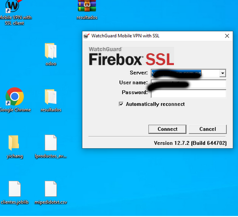

Sistema Colaborativo
la recomendación por el sistema colaborativo se basa en buscar usuarios similares a el usuario al que se busca recomendar.
y luego recomendar los productos de los otros usuarios que el usuario actual no ah considerado.
un ejemplo es youtube que cuando tu ves un video su algoritmo te recomienda otros videos que otros usuarios han visto en base a tus preferencias.
para este caso usaremos la cantidad comprada para poder determinar la similitud entre usuarios.
Regresion x redes neuronales
Usaremos el historial de ventas x predecir la cantidad que se comprara x cada producto , al final listaremos los productos que retornen una mayor cantidad de compra.
Custom Table:
| CANAL |
Variable de entrada del tipo de canal (minorista , mayorista , etc) |
| Mes |
Variable de entrada , El numero del mes |
| Zonas |
Variable de entrada del area de venta |
| Cantidad |
Variable de salida , seria el dato a predecir x el modelo |
Data a usarse
para el sistema colaborativo se debe usar la información actual , para lo cual debemos definir el intervalo de tiempo a usarse , desde la fecha actual , hasta n dias atraz.
Actualizacion de la informacion
ingresar al archivo update_data.py
este archivo se encuentra configurado en el crontab para ejecutarse todos los dias y actualizar la ultima informacion
en la linea 114 (puede variar si se mueve el codigo) , en la variable days se define 60 dias (2 meses)
Promediar la Informacion
La que vamos ah observar es que vamos a tener informacion repetida por ejemplo de un mismo cliente al largo del mes puede tener compras del mismo producto lo que se realiza es un promedio para tener informacion unica por cliente y producto.
En codigo esta informacion promediada se guarda en "mean_pedidos_mes.joblib" para luego ser usado
Coeficiente de Person
se usara el coeficiente de person para calcular la similitud entre los usuarios, por lo cual habra comparar la cantidad comprada, es por ello que se realizara un agrupamiento x cliente y se compara los productos similares

al final de realizar estos calculos obtendremos una array con el coeficiente person por cliente
Calculos de recomendacion
lo que sigue es realizar calculos matriciales para recomendar otros productos , comenzando con obtener los 50 usuarios que tengan el coeficeinte person lo mas cercano a uno.

luego de estos clientes se busca sus productos y se multiplica el coeficiente * la cantidad
luego hay que sumar los indices x producto y realizar el promedio

de aqui sacamos los mas puntuados
Imprimir las Recomendaciones
Finalmente ya la lsita de los productos mas puntuados solo tendria que imprimirse en pantalla los nombre de los productos , es lo que se reflejado en el api como una lista de nombre de productos
Cargar la Informacion
Se carga toda la informacion necesaria de las ventas.

cargar lo label encoders del canal , fecha , canal (los labelsencoders son codificadores qeu convierten texto a una representacion numerica)
Diseño de la Red Neuronal
Se realiza un modelo por cada producto que cumpla las metricas por lo cual se realiza un bucle para cada producto
se filtra la informacion por cada producto y se separa en variables de entrada y de salida , adicional hay un condicional para validar que si hay menosde 150 registros x mes ya no considerarlo .

luego se procede a convertir a numeros las varibles de canal , fecha y zona con los encoders y luego convertirlo a variables dummy
luego se procede ah realizar el diseño de la red neuronal con dos capas
Entrenamiento
una ves ejecutado el modelo solo se guardara si cumple con las metricas minimas del MAE(valor absoluto medio) y MSLE (Root Mean Squared Logarithmic Error,
ambos miden la diferencia entre valor predicho y valor real , solo que el ultimo es usado para cuando los vlores de entrada son muy distantes por lo cual usa logatitmos (son fomrmulas estadisticas) , mientras mas cerca cero mejor
En el servidor para realizar el entrenamiento de los modelos debe eliminar los archivos de la carpeta pkl_generated
luego ingresar a la sesion : tmux attach -t regre
debe asegurarse que este en la ruta: /home/gwyadmin/svr_integ_artificial/recommendation_IA/generator
y ejecutar : python3 regresion.py &
Este proceso demora entre 1 o 2 dias max
puede cerrar la session del tmux con : tmux detach
Prediccion
En el api se hace la prediccion con los modelos entrenados pero solo x cada cliente se recorre los productos que alguna ves compro , ya que no tendria sentido predecir algun producto que nunca ah comprado (para eso esta el algoritmo colaborativo)
se lista los que generaron una mayor cantidad en la prediccion de la cantidad
Ingresar a la VPN
Logearse en WatchGuard

Ingresar con Putty

Ingresar a la carpeta raiz
cd /home/gwyadmin/svr_integ_artificial/recommendation_IA
ACTIVAR PYTHON VERSION 3.10
conda activate python310
Procesos en Segundo Plano
PARA LOS PROCESOS EN SEGUNDO PLANO USAREMOS TMUX
Listar ventanas activas
tmux ls

tmux attach -t yichang
Esta comando lo que hace es ingresar a la sesion donde se ejecutando el api del webservices
si desea detener el proceso de flask debe buscar el numero del proceso con ps
volver a levantar el servicio con : flask --app app run --debugger --host=0.0.0.0 &
asegurarse estar en la ruta cd /home/gwyadmin/svr_integ_artificial/recommendation_IA , para ejecutar el comnado anterior
para salir de la sesion con el comando: tmux detach
tmux attach -t regre
Esta comando lo que hace es ingresar a la sesion donde ejecutaras la actualizacion de los modelos de regresion
para salir de la sesion con el comando: tmux detach